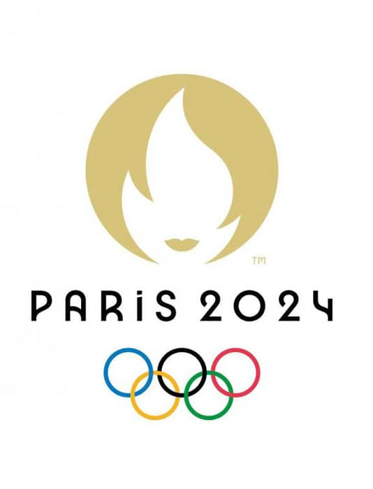
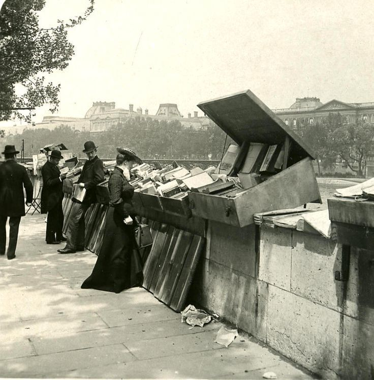

Expériences

CHEF DE PROJET MAINTENANCE
Aptiskills, mission chez Paris2024 à Aubervilliers
2024 (6 mois)
Mission au sein de l’équipe maintenance des sites olympiques :
- Pilotage et suivi de 35 personnes travaillant sur les sites olympiques
- Management d’une équipe centrale de 4 personnes
- Supervision de la plateforme Safescore (outil de suivi des demandes d’interventions, des rondes de vérifications, des températures des sites)
- Gestion et administration d’un tableau de bord PowerBI utilisant les données de Safescore et reporting quotidien pour les directeurs de sites

Mission au sein d’une équipe d’e-sport sur le jeu League of Legends :
DATA ANALYST
Équipe d’esport (PCS - League of Legends) 2023–2024 (1,5 ans)- - Extraction, nettoyage et analyse de données avec Python (API/Web scraping)
- - Création de rapports (Power BI, LookerStudio, Excel)
- - Soutien à la prise de décision des coachs
2022 – 2024 (1,5 ans) — MAITRE D’OUVRAGE
Aptiskills, mission chez Vinci Autoroutes à Rueil-Malmaison- Gestion du Programme de Maintien en Conditions Opérationnelles (PMCO - remplacement de 150 000 équipements)
- Suivi du planning, du budget et des réunions pour le PMCO
- Préparation et présentation du comité d’engagement annuel
- Préparation des phases d’études et suivi des travaux